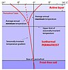

active-layer

Definition: In environments containing permafrost, the active layer is the top layer of soil that thaws during the summer and freezes again during the autumn. In all climates, whether they contain permafrost or not, the temperature in the lower levels of the soil will remain more stable than that at the surface, where the influence of the ambient temperature is greatest. This means that, over many years, the influence of cooling in winter and heating in summer (in temperate climates) will decrease as depth increases.If the winter temperature is below the freezing point of water, a frost front will form in the soil. This "frost front" is the boundary between frozen and unfrozen soil, and with the coming of spring and summer, the soil is thawed, always from the top down. If the heating during summer exceeds the cooling during winter, the soil will be completely thawed during the summer and there will be no permafrost. This occurs when the mean annual temperature is above 0 °C (32 °F), but also occurs when the mean annual temperature is slightly below 0 °C on sites exposed to the sun with coarse-textured parent materials (vegetation).
Source: Wikipedia
Wikipedia Page (Something wrong with this association? Let us know.)
Wikidata Page (Something wrong with this association? Let us know.)
Occurs in: